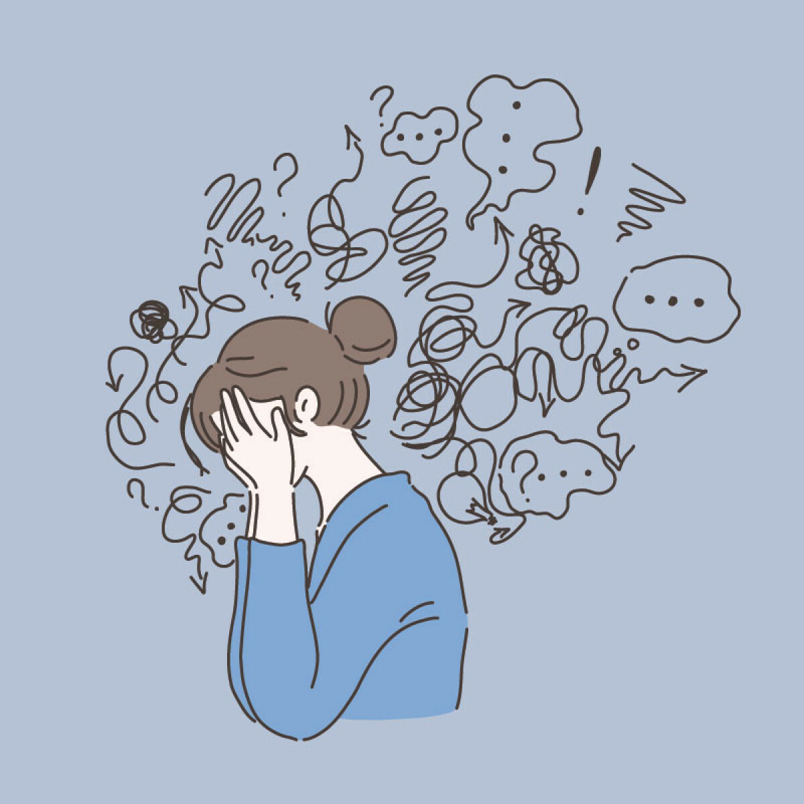

God fysisk helse handler om at kroppen vår virker som den skal, man har gjerne lite plager, smerter og sykdommer. Spesielt aktivitet og et sunt og variert kosthold bidrar til god fysisk helse.
Psykisk helse handler mer om følelsene våre, man kan kan ikke nødvendigvis se den psykiske helsen til hver enkeltperson. Hvis man skal ha god psykisk helse, handler det nødvendigvis ikke om å ha det bra hele tiden, men å kunne takle utfordringene man møter i hverdagen, hvis dette blir vanskelig eller at man sjelden har det bra, kan det være tegn på psykisk lidelse. Psykiske lidelser påvirker tankene våre negativt, eksempel på psykisk lidelse er depresjon og angst.
Når kroppen er i fysisk aktivitet utløses det umiddelbart en rekke stoffer i hjernen som forberdrer den psykiske helsen din og bidrar til positiv effekt på angst og depresjon.
- Sunt og variert kosthold
- Nok søvn
- Forebygge skader
- Hold deg i fysisk aktivitet daglig
- Nok søvn
- Være i aktivitet- ifølge helsenorge.no har fysisk aktivitet umiddelbart positiv effekt på angst og depresjon. Det bidrar til god helse, gir bedre humør og søvn, mer energi og reduserer stress.
- Utfordre deg selv sosialt
- Snakk om det hvis du har det vanskelig
- Være bevisst på skjermbruk- skjermbruk kan fungere bra for noen, men det er lurt å være bevisst på skjermbruken sin. Man blir ofte sittende å scrolle uten å tenke over det,man kan deretter bli mer og mer isolert og innesluttet i eget hjem.
Lite søvn= lite energi, mer stress, dårlig humør, kort lunte, vanskelig å konsentrere seg Mangel på søvn svekker evnen vår til å lære og å tenke klart. Det kan også svekke immunforsvaret og effekten av vaksiner. Søvn og helse påvirker hverandre gjensidig, dårlig og lite søvn regulerer appetitten og kan føre til vektøkning og i verste fall diabetes. Det er viktig å huske på at dette skjer i svært få tilfeller og da ofte påvirket av andre grunner også. Søvn påvirker sulten, om du ikke har nok søvn, blir du sultnere.